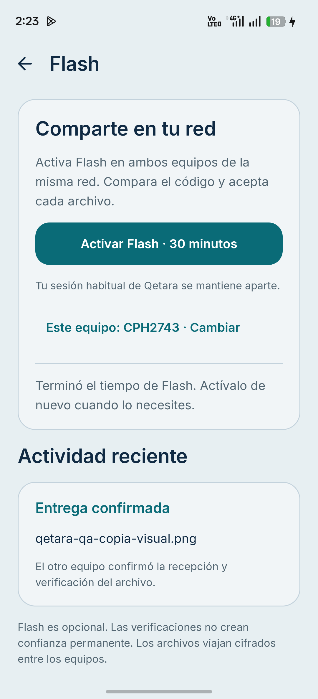
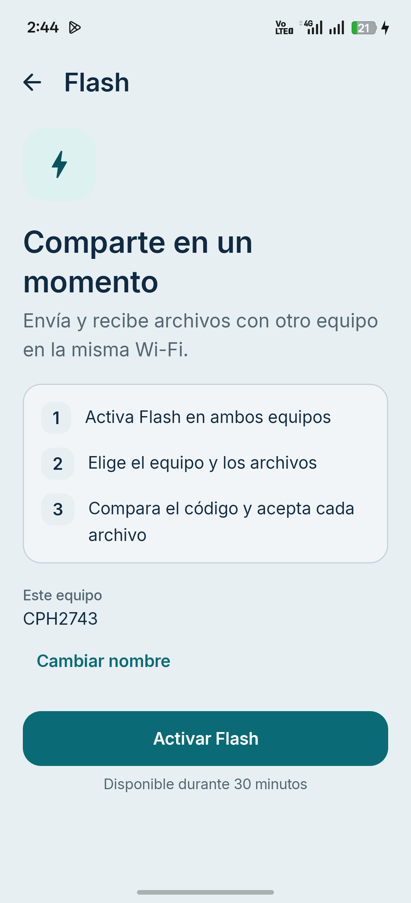

Inicio anterior
La explicación y los controles comparten una tarjeta extensa.

El receptor y los archivos pasan al centro. Los detalles de la sesión, la ayuda y el historial acompañan el flujo sin competir con la acción principal.
La explicación y los controles comparten una tarjeta extensa.

Una introducción breve y una acción principal.

Capturas reales del teléfono. El símbolo de Qetara y las paletas existentes se conservan.